Figure 2.1.6 is another shot of our cold solder joint, along with the other ways this connection is troubled. See the gray color compared to the bright silver on the other solder cups?
Figure 2.1.6 Cold solder joint – 2.
It ’s not hard to burn the insulation on conductors ( Figure 2.1.7 ) – just leave your soldering iron in the wrong place for a few seconds. It ’s a lot harder to fi x it once burned, and requires thin diameter heat-shrink, along with a heat-shrink gun.
Figure 2.1.7 Insulation burned.
2.1 The good/bad/ugly and the ‘bead game’
77
I hope you never see mistakes like this. I hope even more that you never make mistakes like those you ’ ve just seen. But if you do, remember, mistakes are part of the learning process. Don ’t be (too) upset. Don ’t get angry at yourself. Just do it over until you can do it right – even if that means doing it several times.
I promised you a ‘ good ’ example at the start of this section, so now it ’s time to (re)visit an example that occurs in Section 3 of this book. It ’s the picture of a properly soldered connection on an XLR plug (Figure 3.6.30). Here, it ’s been cloned and renamed.
All the aspects of the solder joint are correct in Figure 2.1.8 . The solder is bright, shiny and fi lls the solder cup completely, without being either underfi lled or overfl owing. The conductor is correctly inserted, with the insulation pushed fl ush to the edge of the solder cup, without being
inserted too far or leaving exposed strands. Isn ’t it pretty?
Figure 2.1.8 Correct solder joint.
The ‘ bead game ’
With apologies to Hermann Hesse, our bead game is not so metaphysical, nor are the beads made of glass. Rather, the beads are small grape-shaped blobs of solder, deliberately created on the ends of the conductors we want to solder. The function of our inedible grapes is to bring a ‘ payload ’
of solder to the solder joint, in situations where it ’s not practical to do so by hand.
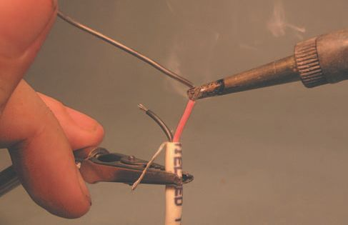
78
Audio Wiring Guide
To do this, it is necessary to reheat the solder once but, if you ’ re fast, this can be done without degrading the electrical or physical qualities of the solder. Figure 2.1.9 shows how to do it.
Figure 2.1.9 Ready to tin.
Since this is just an example of beading, I ’ m only going to tin and bead the red conductor. Here ’s a pre-stripped wire ready to use. You better already know how to strip wire if you ’ re this far along in the book!
Sometimes you can tin and bead in one operation – it depends on how
cooperative the wire is, the type of solder you ’ re using, and the soldering iron you ’ re working with. Often, it ’s better to do this as a two-step operation – tin fi rst and then bead. In Figure 2.1.10 I ’ m tinning the red conductor with a thin coat of solder. This will make it easier for my bead/
blob to adhere on the strands of the conductor.
Figure 2.1.10 Tinning conductor.
2.1 The good/bad/ugly and the ‘bead game’
79
Figure 2.1.11 shows the fi nished tinning. Notice the slight mounding of the solder coating? The conductor is ready for the next step – beading.
Figure 2.1.11 Tinning done.
Notice that I ’ ve inverted the wire, so the molten solder will fl ow down, toward the tip of the conductor ( Figure 2.1.12 ). It will also fl ow nicely off the conductor and onto your bare knee if you place it in harm ’s way.
Figure 2.1.12 Beading conductor.
Sometimes it ’s necessary to let the bead/blob fall off and quickly try again – so do this on a tabletop, wear safety glasses, and be aware of where your body parts are, if you don ’t want molten solder burning a crater into your skin!
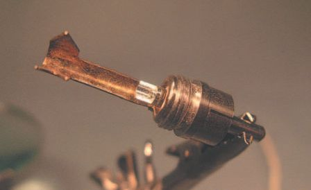
80
Audio Wiring Guide
If you do get hit with hot solder, shake it off; don ’t touch it or try to rub it off. You ’ ll just embed it deeper into your skin and make the burn worse.
Solder in your eye is an immediate trip to the emergency room; don ’t try to deal with it yourself. But with a little precaution (and a little luck), none of these bad things will ever happen to you, right?
I admit it – the bead in Figure 2.1.13 is not grape shaped. It ’s more like a frozen water drop, but it ’s still acceptable for working with. There ’s enough solder, but not too much. And it ’s nice and shiny, so it probably wasn ’t overheated. I ’ ll use it.
Figure 2.1.13 Finished bead.
A bare RCA male connector I had handy is shown in Figure 2.1.14 . We always want to tin the solder cups in connectors, so that ’s what I ’ ll do with this one to ensure good bonding with the bead.
Figure 2.1.14 Bare connector.
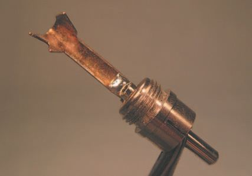
2.1 The good/bad/ugly and the ‘bead game’
81
I don ’t have to put much solder in the cup, since my bead has a lot ( Figure 2.1.15 ). Normally, I ’ d fi ll the cup with solder and not bead the wire, but sometimes there ’s no cup to fi ll, just a fl at tab or, worse, a convex surface, like some TT plugs have.
Figure 2.1.15 Tinning solder cup.
This connector is just being used for a demonstration of beading techniques because I had it handy, and didn ’t have any of the more esoteric connectors that really need to be beaded available. So shoot me. If you want an
example of where beading is absolutely mandatory, refer to module 3.7 (TT
male connectors).
Oops, there ’s a bit more solder there than I intended, but it ’s clean and bright ( Figure 2.1.16 ). Let ’s try soldering the beaded conductor in place and see how it looks.
Figure 2.1.16 Ready to connect.

82
Audio Wiring Guide
I ’ ve placed the bead on the solder cup and pressed the soldering iron down fi rmly on both, for quick heat transfer ( Figure 2.1.17 ). I ’ ll also push the conductor a bit forward into the cup, when the solder melts.
Figure 2.1.17 Soldering conductor.
The completed solder point is shown in Figure 2.1.18 : shiny, with no overfl ow from the cup, and the insulation goes right up to the solder joint. I admit, it ’s ever so slightly too plump – I could have added less solder to the cup. But it ’s good enough to show you the concept of beading.
Figure 2.1.18 Completed connection.
Since this is just an example of beading, I ’ m not going to deal with wiring the whole plug. If you want to see that, read Section 3.4, the module on wiring RCA male connectors. This particular connector will be de-soldered and put back in my spare parts bin. Recycling is good for electronic
parts too.
2.2
what is it anyhow?
Way back at the beginning of the book, I promised to show you how to
test the cables you create. To do this, we ’ d typically use a gadget called a
‘digital volt-ohm-milliammeter’. Since saying that whole name repeatedly quickly becomes tedious, we use the acronym DVOM. It is also called a
DMM, for digital multi-meter. Both names are good, describing the unit accurately. The older version of this meter, with the swinging needle, was called a VOM, as it ’s not digital.
I ’ ll show you one of these shortly, and also give a detailed description of some of its typical functions. But before I get so specifi c, I ’ d like to explain why you might want to use a DVOM to help you in your work.
All DVOMs measure electricity in at least three ways. First, they measure voltage: DC (direct current) voltage and AC (alternating current) voltage. As you may have guessed, voltage is measured in volts, multiples of volts and fractions of volts.
Second, they measure DC resistance, which uses the ohm as a basic unit of measurement. The same principle applies here: we can have fractions of an ohm and megohms (millions of ohms).
If you ’ re curious, AC resistance is called ‘impedance’, and is too complex to deal with here, as it is frequency dependent. Nor is it something you need to know about to do good wiring.
Third, DVOMs measure current – which is the amount of electricity passing a certain point, as opposed to voltage, which is the force with which the electricity is passing a point.
Think of the difference between a water hose with a nozzle that focuses the spray to a tight stream, and the same hose without the nozzle, with the water just gushing out. The hose without the nozzle may pass more water (current), but it will not have the force (voltage) of the tight stream from the nozzle.
84
Audio Wiring Guide
The basic unit of measurement for current is the ampere, or amp for short.
But an amp of current is actually quite a lot, so we often deal in amounts as small as thousandths of an amp – or milliamps. From this comes the name
‘milliammeter’, which is a meter for measuring very small amounts of current.
Now you know what all the letters in the acronym DVOM stand for. Kind of makes you feel glad all over, doesn ’t it?
Fancier DVOMs add more functions, signal frequency, temperature meas-
urement, audible tones and lights. But all will offer the basic functions of measuring volts, ohms and milliamps.
What this means is that we can check our soldering with the ohms function, check AC and DC voltage and, if the need arises, we can check the current fl owing in a circuit.
For our needs, I ’ m going to skip current measurement, as you can solder thousands of cables and never use that function. Google on ‘ using a DVOM ’
or ‘ using a DMM ’ if you want to learn more.
A typical DVOM is shown in Figure 2.2.1 .
Before going any further, I ’ d like to quote
from the owner ’s manual for this DVOM:
‘ Improper use of this meter can cause
LCD display
damage, shock, injury or death. Read and
understand this user manual before operating
the meter. ’ Nor does the manual exaggerate;
Option
you really can kill yourself if you don ’t use a
buttons
DVOM in a safe manner.
Light button
So my overview here is no substitute for
Mode
button
reading the instructions that came with your
DVOM. As the acronym says, ‘ RTFM ’ – which
stands for ‘ Read The ******* Manual ’ !
Function
Test
selector
Nor is my short explanation any substitute for
lead
jacks
common sense. Keep your hands away from
electrical contacts and wear rubber-soled
shoes. Have someone nearby with an insulated
tool to knock you free of high voltage/current
contacts if you ’ re doing such measurement.
Figure 2.2.1 Parts of a DVOM.
Above all, think, plan and act carefully.
2.2 Using a DVOM or DMM, and what is it anyhow?
85
Now that I ’ ve (hopefully) scared you into using it carefully, let ’s have a closer look at our typical DVOM. This unit costs about $100 and comes with lots of nice features I won ’t explain, because I want us to concentrate only on those features needed to wire cables and test them.
Our example is an ExTech model 22-816 that I got at Radio Shack when
my old DVOM died. It ’s an RMS unit, which in a nutshell means that it measures voltage by averaging, and may have a built-in error value.
Peak reading DVOMs are more costly and not needed for testing
cables.
Don ’t feel that you ’ re obliged to buy this, or any specifi c model of a DVOM, but you will need one of some kind to test your work. Shop around, and fi nd a model that suits your needs and budget.
Since the LCD panel is exactly that, let ’s start by examining the controls below it. Then we ’ ll go into using the three types of measurement useful for wiring: DC resistance, DC voltage and AC voltage.
On this model there are four option buttons ( Figure 2.2.2 ). From left to right in the fi gure these are:
● Hz/duty cycle button – for wiring, we can ignore this button. With the DVOM in Hz/% mode, you can select Hz for frequency or % for ‘ duty
cycle ’ – which can be loosely defi ned as the amount of time a signal is present vs. the total time being measured.
● Range button – this DVOM is auto-ranging, but you can select a specifi c measuring range by toggling this button, e.g.
ohms or megohms. This is useful mainly for
precision measurements.
● Hold button – this will ‘ freeze ’ a measurement
on the LCD screen. Press once to freeze, once
again to release.
● Relative (REL) button – this acts like the ‘ tare ’
function on a scale. When you press it, any
residual voltage or test lead resistance is
zeroed out, leaving the meter displaying all
zeros, and ready to measure. This is analogous
to the tare on a scale, which is set to zero out
the weight of a bag holding the items being
weighed.
Figure 2.2.2 Option/Mode/Light buttons.
86
Audio Wiring Guide
The two other buttons in this section perform different functions. They are:
● Mode button – used in combination with the ‘ diode ’ function on the rotary function selector dial. ‘ Diode ’ is symbolized by a right-pointing triangle combined with a sideways cross (Christian style). In Figures 2.2.2
and 2.2.3 , the function selector is pointing to the diode function. When diode is selected, toggling the Mode button switches between diode
check and a DC resistance measurement that beeps when the resistance is low. Diode check is not useful for wiring, but a beeping ohms range is very useful, as you don ’t need to look at the DVOM to know that you have a good signal path.
Figure 2.2.3 Function selector switch.
● Light button – turns on a backlight for the LCD display. On this model, you have to hold down the Light button for a second or two to activate the light. This feature helps to keep the light from being turned on by an accidental bump.
Next up, or down, if you realize that I ’ m describing the DVOM in
descending order of the controls, is the rotary function selector dial.
One might say that this is the ‘ heart ’ of the DVOM, since it ’s by spinning the rotary function selector that we can adjust how and what the DVOM
measures.

2.2 Using a DVOM or DMM, and what is it anyhow?
87
For our purposes, only the four functions on the left need attention. They are VDC, VAC, ohms and diode check/beeping ohms. Oh, and ‘ off ’ too, so we save the charge of the 9 V battery inside the DVOM. Make that fi ve functions.
For all your work with a DVOM, the red test lead goes in the right-hand (red rimmed) jack and the black test lead goes in the center (black rimmed) jack ( Figure 2.2.4 ). The only exception is for high amp tests, when the red lead moves to the leftmost jack.
Figure 2.2.4 Test lead jacks.
Since such measurements can be lethal if done incorrectly, I ’ d like to say that you should not try high amp measurements, and thus 100% of your
work with a DVOM will be with the test leads in the position shown in
Figure 2.2.5 .
Figure 2.2.5 Test leads inserted.
Make sure your test leads are fi rmly inserted, and we ’ re ready to work with the DVOM!

88
Audio Wiring Guide
Our next series of shots describes the use of the four test functions above.
I ’ m totally confi dent that you can use the ‘off’ function without any further instruction!
The fi rst exercise is to measure the DC resistance of different types of wire, so I ’ ll set the rotary function selector to ohms or ( Figure 2.2.6 ). I could also use the diode/beep function just to the right of the ), but not all DVOMs have it. I ’ m also going to call the rotary function selector an RFS, because I ’ m tired of typing it!
Figure 2.2.6 Set to ohms function.
Figure 2.2.7 First reading in function.
So I cranked the RFS over to and the cryptic message in Figure 2.2.7
appeared on the LCD panel. The O.L refers to ‘ open load ’ – which is the DVOM’s way of saying, ‘ Dude, I have nothing to measure! ’ . Electro-tech speak often refers to a ‘ load ’ or object-under-test. Since there is no object-under-test yet, the load is missing, or ‘ open ’ . The DVOM is kind enough (and smart enough) to tell us this.
There are three more bits of info here that are easy to miss:
1. In the upper left corner of the LCD is ‘ auto ’ , which shows that the meter is in auto-ranging mode.
2. Under the O.L is ‘ M ‘ , which indicates that the DVOM is currently in the megohms range of DC resistance.
3. Between the O and L is the decimal point, or ‘ . ’ – very easy to miss, as the decimal point will change its position according to what you ’ re measuring. So keep a sharp lookout for that little dot!
These types of information will always be displayed at the same location on the LCD. Or, all but the decimal will, and it moves in a logical manner. Learn to make looking for them part of how you see/read the meter.


2.2 Using a DVOM or DMM, and what is it anyhow?
89
But I want to actually measure something! Let ’s see what happens to that O.L when I touch the test leads together ( Figure 2.2.8 ).
Figure 2.2.8 Touch test leads.
I ’ m touching the test leads fi rmly together; they are dry and clean. The LCD
display fl ickered and quickly settled to the reading seen in Figure 2.2.9 .
Almost everything ’s changed now on the LCD. We ’ re still in auto, but now we ’ re measuring in the range, not M . The O.L is gone, and we see 000.4 on the display. That means the test leads themselves have an internal DC resistance of four-tenths of an ohm – pretty low, but we want to be really accurate. How to adjust for the test leads? Oh, the REL button ( Figure 2.2.10 ), that ’s right!
Figure 2.2.9 Resistance of leads.
Figure 2.2.10 Use of the REL button.
90
Audio Wiring Guide
It ’s what you don’t see here that ’s critical to understand – I ’ m still holding the test leads fi rmly together with my left hand! If I didn ’t do that, I ’ d go back to that boring O.L. So while holding the
aforementioned leads together, I pressed the REL (relative) button and, lo, and behold all zeros.
Now the test leads and the DVOM are a calibrated unit, ready to measure accurately. Let ’s go fi nd some wire!
A good subject for our fi rst test is a short length of two-conductor shielded audio wire ( Figure 2.2.11 ). It ’s typical of internal studio wire.
Figure 2.2.11 Short audio wire.
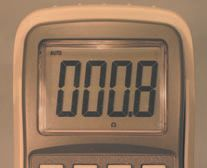

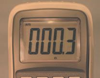
2.2 Using a DVOM or DMM, and what is it anyhow?
91
With the wire resting so I can press down on the strands with the test leads ( Figure 2.2.12 ), I get the reading shown in Figure 2.2.13 .
Figure 2.2.13 Short wire
resistance.
Figure 2.2.12 Test short wire.
We can see there ’s not much DC resistance – only 0.3 . This makes sense, because it ’s such a short piece of wire.
Let ’s try some different kinds and lengths of wire, to see if there are changes in what we measure.
In Figure 2.2.14 I ’ m measuring an equally short length of coaxial video cable. It ’s the kind of wire that would go to a TV cable box. I get the result shown in Figure 2.2.15 .
Figure 2.2.15 Video wire
resistance.
Figure 2.2.14 Video wire test.
The coax cable has a higher resistance – 0.8 . That ’s still pretty low. Let ’s go measure something longer!
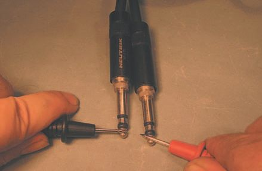

92
Audio Wiring Guide
Figure 2.2.17 Twenty-
foot cable resistance.
Figure 2.2.16 Test 20-foot cable.
Hiding out of the shot in Figure 2.2.16 is the rest of the 20-foot guitar cord that I ’ m testing. The result is seen in Figure 2.2.17 . Our invisible 20-foot guitar cord measures out to 1.5 – a nice, healthy reading.
In general, your resistance readings should be 2 or less, unless you ’ re measuring a very long wire run. Higher readings may indicate cold solder joints, defective wire or tarnished connectors.
But this has all been much too safe and tame. Let ’s measure something a little more lethal!
Just to be sure you remember those acronyms – I ’ ll say it the long and boring way: ‘ Set rotary function selector to volts AC ’ ( Figure 2.2.18 ). We ’ re going to measure some plain vanilla 120 VAC from my wall outlet.
Figure 2.2.18 Set the RFS to VAC.
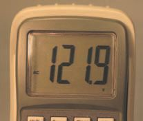
2.2 Using a DVOM or DMM, and what is it anyhow?
93
OK, I lied – we ’ re measuring the same 120 VAC ( Figure 2.2.19 ), but I found it a lot easier to bring an extension cord and a couple of female three-way AC splitters up to the camera table than it would be to show where the whole mess plugs into the wall outlet. Same voltage, same current – it ’ ll still kill you if you mess up.
Notice that the test leads are fully inserted, and my hands are well away from any possible contact points.
The actual reading of my nominal 120 VAC is shown in Figure 2.2.20 . It ’s a tad high, at 121.9, but well within spec. Typical US house AC readings will vary from as low as 105 VAC up to 130 VAC. Electrical power supply companies are not known for delivering ultra precise power – but for us in the US, it ’s there all the time, like the air we breathe. Could you imagine the quality of life in a country where that is not a given?
So now you have some idea of measuring resistance to check your wiring.
And you also (I hope) know how to measure 120 VAC without hurting
yourself.
You can check to see if there ’s electrical power for lights and soldering irons, maybe even some fans to blow the rosin smoke away.
Figure 2.2.20 The 120
VAC reading.
Figure 2.2.19 Measure 120 VAC.


94
Audio Wiring Guide
Figure 2.2.21 Set the RFS to VDC.
There ’s one more test I want to show you – DC voltage. To do this, we have to invoke the RFS again. That ’s ‘ Set rotary function selector to volts DC ’
( Figure 2.2.21 ). I just had to say that to make sure.
Now we need some DC electricity – what can we use for a source? How
about an AA size fl ashlight battery, a great source for VDC ( Figure 2.2.22 ).
Just open up your Maglite and fl ip one out.
Figure 2.2.22 A 1.5 VDC source.
In Figure 2.2.23 I ’ m testing the AA battery, but wait – I ’ ve made a mistake and reversed the test leads. Normally the red lead would go to the positive terminal. What will happen because of this? Look at the reading in
Figure 2.2.24 . Aha! See the minus sign? Also the ‘ Auto ’ , ‘ DC ’ and ‘ V ’ ?
So my measurement is accurate, but inverted because I fl ipped the test leads – another thing to look out for.
Figure 2.2.23 Test AA battery.
Figure 2.2.24 AA battery voltage.
2.2 Using a DVOM or DMM, and what is it anyhow?
95
There ’s also a caveat that since a DVOM does not put a real-world ‘ load ’ on the battery, as a light bulb would, the DVOM will give a falsely high reading.
Real battery meters have built-in loads. Test a bunch of dead/semi dead batteries and you ’ ll soon get an idea of what your particular DVOM can show you. At the very least you can sort out the totally dead batteries with a DVOM.
This concludes my incomplete introduction to the world of DVOMs, how to use them, and why to use them. There ’s a lot more to say about them, but that info is already out there – you just have to go look for it.
If I ’ ve given you a taster and made you want to learn more, I ’ ve done my job. As I said at the beginning, Google on ‘ using a DVOM ’ or ‘ using a DMM ’ if you want to learn more. ‘ The truth is out there ’ , but I don ’t have room here for all of it – just enough to whet your appetite.
2.3
audio and AC power
After much skull scratching and soul searching, I decided to combine
several concepts into one section, because they are so intimately
interconnected. No, not that intimately, they ’ re just good friends.
So in this section I ’ ll talk about unbalanced and balanced audio, unbalanced and balanced AC power, and the best ways to wire and clean up the sound (and picture) of your studio/disco/home theater/whatever.
Unbalanced/balanced audio
Let ’s start with audio; a nice, simple bit of audio – a sine wave. Some of you may have seen a sine wave on an oscilloscope or in a picture. They all look more or less like the one in Figure 2.3.1 .
Basic sine wave
V (plus volts) peak
Amplitude
0 V (zero volts) Reference line
(volume)
V (minus volts) peak
Past
Future
Time line (Hertz or cps)
Figure 2.3.1 Basic sine wave.
Since the sine wave is AC (alternating current), it will start at 0 V (zero volts), rise to a positive peak, then reverse itself, cross the 0 V reference line again, and rise (inversely) to its negative peak. Or it will do what I’ve shown here: start negative and fl ip positive. And it will keep doing this, over and over, until we get bored and turn it off.
2.3 Balanced and unbalanced audio and AC power
97
If the sine wave repeated this action 1000 times in a second, we ’ d say it has a frequency of 1000 Hz (hertz) or, in older terminology, 1000 cps (cycles per second). We audio folks got tired of saying ‘ see-pee-ess ’ and renamed the unit of measurement ‘hertz’ as it ’s shorter.
Higher frequency sine waves will appear more squished together horizontally; lower frequency sines will look more spread out. The reason for this is that the horizontal axis in an oscilloscope is the ‘ time base ’ – it shows the progression of the waveform from the past into the future. The more times a signal reverses polarity, the higher its frequency and the more reversals present in a given period of time.
All sound (almost) is made up of complex combinations of AC (alternating current) waveforms, most of which are not sine waves. The only exception is a DC (direct current) pulse, which will make a one-time ‘ click ’ when connected to a speaker or headphone, but not much else.
We use sine waves for measurement because they ’ re easy to quantify.
I hope you are now fi ne with sine, as it were, and ready to see how this applies to real-world situations.
There are only two ways that an analog audio signal can be carried along in a wired connection. For the sake of brevity (and sanity – mine), I ’ m not going to expound on digital or RF transmission of audio.
The simplest way for an audio signal to be carried on a wire is as an
unbalanced signal. This means that there is a center conductor (hot), and (typically) shield and ground are combined in the outer layer of the wire.
So half of the signal path is (sort of) shielded by the outer layer, and the outer layer itself is tragically vulnerable to interference from sources in the outside world.
What this means is that unbalanced audio is basically limited to runs of 20
feet or less, and even then it lacks the ability to null out induced noise, hum and the other crud we encounter with great ah, frequency.
Balanced audio, on the other hand, can survive runs of hundreds of feet, so all pro audio facilities use balanced mic lines, balanced transmission lines, and do most of their internal wiring in a balanced manner.
98
Audio Wiring Guide
We ’ ll explore what unbalanced/balanced wiring is after we take a quick peek at a couple of guitar plugs to show you the physical difference
between balanced/unbalanced connectors.
I ’ m going to recycle some pictures here from Section 3.1. And being lazy, I ’ m also going to recycle some of the text, as I worked very hard to make the differences clear, and cannot fi nd any way to make things more lucid than what I ’ ve already written.
What you ’ ll see next are the solder tab ends of a stereo and mono guitar plug, followed by the ‘ business end s of the plugs that actually get inserted into guitars, amplifi ers and other gear. And if you guessed that the mono plug is unbalanced, while the stereo plug can be wired balanced, you get a gold star!
There are always caveats and this example is no exception. The so-called
‘ stereo ’ guitar plug can be wired as a single balanced connection, or two unbalanced mono connections that share a common ground. So don ’t
assume, always check.
A close-up of the two solder tabs on a stereo male guitar plug is shown in Figure 2.3.2 . I ’ ve drawn two arrows to show exactly what part(s) I ’ m talking about. The longer part, that extends to the upper left in this picture, is both a strain relief for the wire and the part that the shield/drain gets soldered to.
Figure 2.3.2 Solder tabs of stereo male guitar plug.
Let ’s call the two tabs I show the ‘ upper ’ and ‘ lower ’ tabs in this picture.
The lower tab goes down to the tip of the plug. It ’s the high/hot conductor.
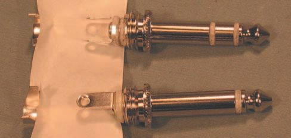
2.3 Balanced and unbalanced audio and AC power
99
The upper tab goes to the ring of a stereo plug, but is omitted (not present) in a mono plug. It ’s the low/cold conductor. As a general rule, tip is high, ring is low, and the long barrel of the plug is used for drain/shield.
Since I want everyone to be totally clear on the difference between stereo and mono plugs, I ’ ve got a couple of side-by-side comparisons ready.
These pesky plugs are so shiny I had to put
some white artist ’s tape behind the solder
tabs, so you could see them against the strain
relief behind them ( Figure 2.3.3 ). I hope it ’s all
clear. On the left is a mono plug with one tab.
On the right, a splendid example of a stereo
plug with two solder tabs.
Now that we ’ re straight on the tabs, let ’s see
the whole plug ( Figure 2.3.4 ). Here we can
see the business ends of our plugs – mono on
the bottom and stereo on the top. Notice the
ring on the stereo plug? That ’s the part the
low conductor is connected to – and is clearly
omitted in the mono plug below it. So one
tab no ring, mono plug. Two tabs has
ring, stereo plug. And remember, a ‘ stereo ’
plug can be wired as unbalanced stereo or
balanced mono – the wiring will look the
same.
Figure 2.3.3 Mono/stereo comparison – 1.
Figure 2.3.4 Mono/stereo comparison – 2.
100
Audio Wiring Guide
Figure 2.3.5 illustrates how an unbalanced mono plug is connected to a one-conductor shielded wire. Or, in other words, to a wire that has one internal conductor which is surrounded by a shield, that also functions as the
‘ low ’ side for the audio signal.
Simplified guitar plugs
Dashed cylinders are shield of wire
Unbalanced mono
Signal 1
Chassis/earth ground
Unbalanced stereo
Signal 1
Signal 2
Chassis/earth ground
Figure 2.3.5 Unbalanced guitar plugs.
The same fi gure also shows how an unbalanced stereo plug is connected to a two-conductor shielded wire. That is, to a wire with two internal conductors, both of which are surrounded by a shield. The two signals are discrete, but share a common ground.
The two signals could be left and right of a stereo signal, or they could be two totally unrelated signals, so the nomenclature of ‘ stereo guitar plug ’ is ubiquitous, but not really accurate.
Hopefully, with the aid of the previous picture, you now have a clear
concept of how unbalanced audio is connected. The same rules apply
whether you are using guitar plugs, RCA plugs or whatever the ‘ plug de jour ’ happens to be today.
But what about balanced audio? Why is it called ‘ balanced ’ , and how does it differ from an unbalanced signal? This is where we come to some very clever voodoo.
Balanced audio is created by splitting the audio signal into two separate but equal parts, and then inverting (fl ipping) the phase of one of the two.
2.3 Balanced and unbalanced audio and AC power
101
Your instantaneous question may be ‘ Why bother? ’ . The reason is that when the in-phase and the out-of-phase signal are properly recombined (by
uninverting the fl ipped phase side in a particular way), the result is that our desired audio signal is not only amplifi ed, but any stray noise it has picked up is immediately nullifi ed, leaving only the pure signal.
This is such an important concept that I ’ m going to repeat it in different words, hoping that it will embed itself deeply in your minds.
Balanced audio reduces or eliminates unwanted noise picked up in wires by fl ipping (inverting) the phase of one of the two conductors that carry the signal. When the signal is properly recombined, its amplitude (volume) is increased and the unwanted noise is nulled out.
Yet another way to describe this is that when the plus ( ) noise is summed (added) to the minus ( ) noise, the result is no noise. Or at least very little noise.
What this means is that balanced audio runs can be hundreds of feet long without degrading the signal by adding noise to it. Pretty cool, huh?
Figure 2.3.6 shows a balanced mono guitar plug, and also the noise-
cancelling concepts we ’ ve talked about above. Pay particular attention to it, as the subsequent discussion in this section is based on you having a clear understanding of how balanced audio works.
Simplified guitar plug
Dashed cylinder is shield of wire
Normal signal
Balanced mono
Signal 1
Signal 1
Chassis/earth ground
INVERTED Signal
Noise cancellation
Normal wave
Normal wave
with noise
with noise
Normal wave
Inverted wave
with noise
with noise
Figure 2.3.6 Balanced connection/noise cancellation.
Audio Wiring Guide
Hopefully, I ’ ve now tossed this information at you in enough different ways that you ’ ve got a decent grasp of it. Let ’s put it in still another way.
Balanced audio lines help cancel out interference of many types. Not only hum (ground loops), but also buzz (60 Hz harmonics), thermal sound (white noise), digital clock jitter and lots of other bad stuff, too numerous to mention.
Next up is an example of a typical balanced 4 dBu audio connection, the kind of connection you might make from a pro-level recording console to a pro-level audio recorder – analog or digital. This example is shown in Figure 2.3.7 for an XLR type (three-pin) connection.
Standard ⴙ4 db audio interconnection
XLR-type connector pinout
Dashed cylinder is shield of wire
Audio output
Audio input
Signal
Pin 2
0.615 V
Pin 2
0.615 V
0.615 V
Ground/shield 0V
1.23 V
Pin 1
Pin 1
1.23 V
0.615 V
0.615 V
Signal 0.615 V
Pin 3
Pin 3
Connection to pin 1
Chassis/earth ground
Chassis/earth ground
Adapted from EquiTech drawing
Figure 2.3.7 Balanced 4 dBu XLR-type connection.
You don ’t have to pay too much attention to the voltage values – they represent an ideal you might see on your DVOM, on a clear day with a
favoring tailwind.
The only function of the voltages in this diagram is to give you some idea of what you might encounter in the real world, and reinforce the concepts of balanced audio.
With luck – and attention on your part – you ’ ve now seen the advantages of balanced audio. You will restrict your unbalanced connections to short runs and, if given the option, always wire gear in balanced mode, right?
2.3 Balanced and unbalanced audio and AC power
103
Now we come to the real mind-blowing part. Electrical power is basically an audio frequency signal! We ’ re all painfully familiar with the sound of 60 Hz hum – it ’s ubiquitous. No matter where you go, you hear it – anywhere within the AC power grid, and often up to several miles away from it.
But is our regular run-of-the-mill 120 V, 60 Hz electrical power distributed in a manner similar to balanced audio in a studio, to reduce noise pick-up?
No! Regrettably, all standard 120 V power distribution systems are wired in an unbalanced mode – this makes them highly susceptible to picking up all kinds of crud!
Every time you hear 60 Hz (or any other noise) in an audio system, it ’s degrading the sound quality and robbing your amplifi ers of power.
This brings us to our next section in this module. The truly observant among you noticed that the last fi gure included a credit to something called Equi Tech. In the next part, you ’ ll fi nd out why that mysterious credit is there. Can you wait that long?
Balanced AC (electrical) power
Just as unbalanced audio lines are degraded by noise pick-up, so too are our AC power lines. We take AC power for granted, because the lights
and appliances work. But computers, synthesizers, sequencers and all our other sophisticated electro-toys require much cleaner and higher quality AC
power than your grandma ’s toaster.
There ’s an old computer programmer ’s acronym – ‘ GIGO ’ – stands for (G)arbage (I)n (G)arbage (O)ut. The quality and functionality of a computer program can be no better than the coding that created it. Bad code makes for a bad program. Or, in our case, bad quality AC power creates bad quality audio and video, jittery digital gear and ditto for all the other electro-toys.
Each electronic component does have some power fi ltering and smoothing ability built in, but it ’s often as minimal as the manufacturer can get away with. It ’s ironic in a sense. We spend tons of money on noise reduction, noise gates, dynamic noise fi lters and more, but we typically ignore the source of much of the noise itself – the AC power being fed to the equipment!
That 60 Hz note we hear is actually a real, musical note – a fl atted B1, if you call ‘ middle C ’ C4. And the fact that our power grid is truly universally contaminated has the whole world singing the blues. That ’s just my minus 41 cents worth (the amount that B1 is fl atted).
Audio Wiring Guide
If balanced transmission is good for audio, why not use balanced
transmission for the audio frequency signal that is our AC power?
Why not start at the source? Feed clean, balanced AC power to our gear?
It will pay us back with higher quality performance, greater stability and its eternal gratitude.
This opens up a host of questions that I see swirling in your mind. Let ’s make a list of them and I ’ ll answer quickly, so we can go on.
Q: Does this mean that the entire AC power grid of the whole world is mis-wired?! That ’s mind-boggling!
A: Yes, it means exactly that, from the viewpoint of providing optimal AC
power. The only optimal AC power distribution is in private facilities that have created their own supply.
It also means that we are faced with the prospect of (eventually) rewiring the whole world if we choose to do so. However, we ’ ve already done this task twice. You quickly ask me, ‘ When was that? ’
Once, when we converted from DC power to AC power, and again when
we converted from two-pin AC to three-pin AC. How quickly we forget the techno struggles of yesteryear.
It is likely that balanced AC power will remain a private sector decision, as I know of no town, city, state or country contemplating its deployment, although there are excellent reasons why they should.
Q: OK, you ’ ve convinced me. How do I get some balanced AC power for my studio?
A: There are several companies who sell balanced AC power supplies in various sizes. You could even make your own, if you were determined, a good electrician, and wanted to reinvent the wheel.
For the sake of brevity, and my carpal tunnel syndrome, balanced AC power will henceforth be abbreviated as BACP . If you don ’t grasp that, give this book to a friend!
2.3 Balanced and unbalanced audio and AC power
105
Q: Don ’t worry, I understand! I want that BACP right now! Isn ’t it expensive?
A: No, not really. Musician-size units start at around US $1000 and scale up in cost according to the size you need. BACP can even save you money! I ’ ll explain this later.
Q: Is it hard to use?
A: No, you plug the BACP supply into your regular AC outlet. Then you plug your gear into the BACP. Simple.
Q: Can I use my UPS (uninterruptible power supply) along with the BACP
supply?
A: Yes, but you must plug the BACP supply into your UPS supply. So you better have a honking big UPS – none of that wimpy stuff. The hook-up
goes like this:
(AC power at wall socket) → (UPS) → (BACP) → (Gear). Clear now?
Q: There are a lot of ‘ power conditioners ’ on the market. Do they all create BACP?
A: Absolutely not! Only a handful of companies make real BACP supplies.
Other ‘ power conditioners ’ do, in fact, clean up some of the gunk on your raw, nasty, polluted AC, but only those units that give a power output of (normal 60 VAC) → (0 V neutral) ← (inverted 60 VAC) are true BACP units.
Only those units provide the noise cancellation of BACP. I ’ ll explain this in detail shortly. My goal in this Q and A section is to give you an ultra-fast overview and then fi ll in the details later.
Q: You said that BACP would cost me at least US $1000. Then you said it could save me money?! Explain!
A: Ah, very good! You really are paying attention. By using BACP most of the customized wiring for a studio is eliminated. You can use stock cables and connect ground everywhere.
You don ’t have to create a star-ground system. In fact, the more places you connect ground, the quieter the system becomes, as more noise is
nulled out.
Audio Wiring Guide
Since custom star-ground systems are, by defi nition, time intensive to wire, they are also costly to create. So the cost of your BACP may save you several times your investment in it, by reducing your wiring costs.
In other words, your $1500 BACP will eliminate a signifi cant part of your (potentially typical) $8500 (or more) wiring costs. Not all, of course. You still have to wire your gear together.
But now you can use stock cables, mix and match stock with custom
work, and only custom wire what is needed. Cheaper, faster and it sounds better too.
Q: What if I can only afford BACP for some of my gear?
A: Excellent question! Take a look at http://www.equitech.com/faq/
somequip.html . But you have to promise me not to peek at it until you ’ ve read the rest of this section. Deal?
Introducing Equi Tech
BACP is not a new idea; it ’s been around for decades as an esoteric
laboratory concept for diehard audiophiles. Back in the early 1990s, Martin Glasband created the fi rst commercially marketed BACP supplies through his company, Equi Tech. The company URL is www.equitech.com . There is a vast amount of useful info on this site! Much more than I can include here.
Nowadays other companies are producing BACP supplies. There is some
question about the legality and ethics involved, since none of them pay (to my knowledge) any royalty to E T, which holds the patents for developing BACP. This was confi rmed by E T itself when I queried them.
As an audio engineer, and tech, I ’ ve followed the testing and growth of BACP
for over 25 years. In all that time, I ’ ve never met Mr Glasband, I have no stock in Equi Tech, and don ’t make a penny off the sale of E T equipment. But I ’ ve talked to many E T BACP users and a few facts stand out:
● No user I ’ ve ever met has given up their BACP supplies once installed.
● All the users I ’ ve met said they experienced a dramatic reduction in noise, and a huge increase in sound and video purity.
● The late Dave Smith (head of R & D for Sony Music Studios at the time) once said to me that BACP made such a difference in how effects units
sounded that he almost wanted a huge power switch, so he could fl ip
back and forth, and choose the sound he liked best for what he was
processing at the time.
2.3 Balanced and unbalanced audio and AC power
107
● The client roster at E T reads like a who ’s who of the audiophile and pro audio industry. Check out this link: http://www.equitech.com/ourclients/
someclients.html . This roster represents millions of dollars quietly
invested by the cognoscenti to improve their sound – almost as a ‘ secret weapon ’ .
● Any company that makes gear used by NASA, Digidesign, the FAA
and the Cirque du Soleil has to be doing something right. It can ’t all be smoke and mirrors.
When I started writing this section, I wanted to quote some of Mr Glasband’s articles and other works on the E T website. Mr Glasband kindly consented, asking only proper credit when due. I ’ ll be using snippets of text and some illustrations; in these illustrations, the credit ‘ adapted from Equi Tech drawing ’ means that I redrew a diagram from the E T website for greater clarity. All other illustrations are entirely my own work.
BACP theory and practice
Now that I ’ ve given you a general outline of what BACP is, and why to use it, we can get down to the nitty-gritty details.
The 120 VAC single-phase AC coming out of your wall socket is often
a split-off from 220 VAC two-phase or 220 VAC three-phase AC that is
installed as the primary power source to a facility.
I ’ m not going to describe the 220 VAC interface, as you will not be using it, unless you ’ re rewiring a major installation for many kilovolts of power.
My point is, by the time you get it, that 120 VAC is always unbalanced, no matter what the confi guration of your primary building power is.
The 120 VAC power circuits
Unbalanced AC power
typically available are
Hot 120 VAC
illustrated schematically
3rd pin
in Figure 2.3.8 . The funny
120 VAC
120 VAC
from grid
to gear
looking thing on the left side
of the diagram is the electrical
Neutral 0 VAC
symbol for a transformer. The
rounded squiggles represent
Chassis/earth ground
the coils of conductors in it
and the two vertical lines are
Adapted from EquiTech drawing
the (typically) iron core they
Figure 2.3.8 Typical unbalanced AC.
are wound around.
Audio Wiring Guide
Whether you realize it or not, the other end of the wiring to your local 120 VAC wall socket is the output of some super-sized power transformer upstream from you in the power fl ow. It could be a local splitter transformer from your utility company or some other confi guration. But it ’s always there – it has to be there.
On the left side, our transformer is being fed AC power from the grid. On the right side is what you get – the AC power running your gear, lights and popcorn maker.
Notice that although there are three conductors, ground and 0 V are tied together. This is a safety precaution, so that if there is a short to chassis of the 120 VAC, it will blow a fuse or trip a breaker, instead of making you light up, smoke and smell bad.
So although there are three conductors, there are really only two signal paths – 120 VAC high and 0 V low/ground. Unbalanced. Bad.
How can we fi x this? Martin Glasband found (one might say rediscovered) a simple and elegant solution. If we reference ground to a ‘ center tap ’ on the transformer, we can still get the 120 VAC we need, but now the 120
VAC is fed out in a balanced manner, well able to overcome myriad forms of contamination. It is illustrated in Figure 2.3.9 .
Balanced AC power
Normal 60 VAC
120 VAC
0 VAC
120 VAC
from grid
3rd pin
to gear
Inverted 60 VAC
Chassis/earth ground
Adapted from EquiTech drawing
Figure 2.3.9 Balanced AC.
2.3 Balanced and unbalanced audio and AC power
109
Since the center tap of the transformer is tied to ground, we still have protection from short circuits, but now each leg of the transformer is carrying 60 VAC referenced to ground.
It ’s 60 V on the former high leg and 60 V (inverted) on the former neutral leg, but the voltage potential across the two legs is still 120 VAC
of balanced AC power. What ’s good for audio is good for AC power too.
Balanced. Happy, clean, quiet, safe. Nice.
What this means is that any BACP supply is, itself, built around a special (center-tapped) transformer.
We plug the BACP transformer into a source that feeds it unbalanced
AC power, from the utility company ’s power distribution transformer. The BACP supply then converts that dirty, old, unbalanced AC into nice, clean, balanced AC for our enjoyment.
We ’ re using a (special/center-tapped) transformer and related circuitry to correct a problem inherent in the (upstream) transformer feeding AC power to it. Clear?
Here are some quotes from Martin Glasband:
‘ Ideally, the correct type of AC power for audio gear in the United States is 120-volt, two-phase (balanced) power. Commercial use of two-phase
(equi-potential) AC isn ’t new. In fact, it is probably the fi rst type of AC power ever put into widespread use in this country (Chicago in the early 1900s).
Nevertheless, its commercial use is all but dead these days. ’
‘ Properly grounded 120-volt two-phase wiring systems aren ’t mentioned at all in the National Electrical Code (NEC) [thanks to E T and MG this is no longer true]. However, this unfortunate fact didn ’t deter a few innovative engineers and studio execs from employing a 120-volt equi-potential AC
system at the Zoo Studios, Studio City, CA. ’
Audio Wiring Guide
‘ Soon after its opening, a studio musician plugged in his Marshall amp and declared it was broken because there was no hum. Much to his surprise, his amp worked just fi ne. He mentioned to the studio engineer that this was the fi rst studio he ’ d ever worked in where his amp simply made no noise at all.
It should also be noted that it was not necessary to drive a single ground rod. That ’s pretty clean AC. ’
( http://www.equitech.com/articles/rep1.html )
The following are quotes from Roger Nichols, a well-known (and respected) audio authority, taken from the E T website. He ’s also a talented (and very funny) writer – worth looking up.
‘ Spike, noise, surge, swell, transients, harmonics and sag are not the names of members of a new alternative rock group; they are characteristic problems encountered in power management. ’
‘ AC power is often the most overlooked area in recording studio design. If you were a farmer and your horse was your livelihood, you would probably pay attention to how well he is doing. ’
‘ AC power is the main source of your income, and also the primary cause of all the hums and buzzes you must deal with on a day-to-day basis. They say that if you build a better mousetrap that they will beat a path to your door.
Well, just wait until you have the quietest studio in town and see how fast everyone wants to work there. ’
‘ Quiet grounding schemes in studios sometimes border on the occult. I asked one studio why they had a water cooler in the control room with
no water in it. The said that, for some reason, when the water cooler was plugged into the same branch circuit as the guitar amps, there was less hum in the amps. I unplugged it once. They were right. ’
‘ Grounding circuits were never meant to carry current except during a short circuit. Objectionable ground currents are those that will provide you with a shock. Anything less than that is OK as far as Underwriters Laboratories is concerned. ’
‘ We have all experienced ground loops in the studio. The really bad ones, with hum levels above the signal level, we try to cure. The ever present little hums, that make the DAT meters stick one segment up from the bottom, we try to ignore. ’
2.3 Balanced and unbalanced audio and AC power
111
‘ We try breaking grounds in balanced cables at one end so that we do not have multiple ground paths for ground loops. We lift chassis grounds with special plugs and make sure that metal chasses do not touch each other. If we removed the currents from the ground, then we would have no current to loop [my emphasis – JH]. ’
‘ With balanced power, you can use any type of grounding confi guration you wish. Star, schmar. You can leave the grounds connected at both ends of your audio cables. You can throw away all of the ground lift adapters. You can fi nally plug everything in the way it was meant to be plugged in. ’
( http://www.equitech.com/articles/power.html )
Whew, sounds pretty compelling to me, what do you think? Roger Nichols is a bit over the top at the end – if you go BACP, you need to put back all those grounds you lifted when trying to star ground. The BACP scheme
works best when ground is connected at all points.
I could go into a lot more detail, but all the info is on the web – at the E T
site, or easily available through Googling. Try searches like ‘ balanced AC
power ’ or ‘star grounding ’ .
Speaking of star grounding, I keep referring to it, but I ’ ve never said what it is or how to do it – I ’ d better fi x that right now.
Star grounding
Prior to the development of BACP, the only effective way to combat
ground loops was to create a star-ground system. The name comes from
the concept that all gear is grounded at one (and only one) central point.
The ground conductors radiate out from that central point like the rays of a star – hence the name.
Every other path to ground should (ideally) be ruthlessly eliminated. This includes chassis-to-chassis contact, contact through metal rack rails, and contact through third-pin AC plugs.
Each unit would (typically) have its audio ground lifted at input and carried at output. The third pin on the AC plug would get a ground lifter, and a ground wire would be run from a (tested) ground point on the unit to the central point of the star ground.
Audio Wiring Guide
Sound complicated? Time intensive? Costly? You betcha! But it worked.
However, I have to add ‘ illegal ’ to that list, as lifting the ground on the third pin is against electrical code.
And I also have to add ‘ potentially lethal ’ because if the third pin is lifted, the star-ground conductor is detached and the unit has a 120 V short to chassis – well, you could die. Admittedly, the chance of all three happening is remote – but why gamble?
I ’ ve wired pro-level star-grounded studios and gone through all of the above. Sometimes results were spectacularly good – but at a high cost in both labor and money.
If I had to do it again, I ’ d get a high-caliber pistol and hold it to the studio owner’s head, until s/he agreed to do a BACP installation.
Your choices
In wiring your own facility, you have basically three choices. Of these, I suspect the economics involved will limit you to two. Here they are:
1. Connect ground everywhere without using BACP. This is usually what happens anyway. It gets you up and running, but things are noisy, gear acts fl aky and stupid, ground loops come and go. Sounds like your
typical home studio, right?
2. Create a rigorous star-ground system. It takes a lot of time and labor, but will give you cleaner sound, fewer loops, and more reliable operation.
It’s diffi cult to maintain system integrity, as the star-ground scheme is typically broken when gear is added or changed.
I started this book in 1991, and at that time I was a star-ground fanatic! I sank ground rods, drilled I-beams – the whole nine yards. There was no better technology and I pushed star grounding to the max.
I had special non-conductive rack rails made out of wood, and made space between units mounted in racks to avoid chassis-to-chassis contact – and all of it helped, often radically. But these days, I think BACP is the better option – which brings us to the fi nal point:
3. Connect ground everywhere using BACP, If I was a studio owner, with a limited budget, I ’ d connect ground everywhere, get running and save
my pennies for a BACP supply.
2.3 Balanced and unbalanced audio and AC power
113
When I can afford it, I plug in the BACP, and I don ’t have to rewire anything!
That’s a lot better than wiring a star-ground system and then re wiring it for BACP.
If individual units give me a hard time, before I go to BACP, I try lifting ground(s) on just those units and keep track of what I ’ ve changed, as it will have to revert to the original state when the BACP goes in. Or I use audio isolation transformers to lift the ground for me. Do a Google on ‘ audio isolation transformer ’ – get big ones that can deal with high-level peaks and not saturate.
So here ’s my twenty-fi rst century recommendation for twenty-fi rst century power needs and twenty-fi rst century audio/video production. Wire ground everywhere. Install BACP as soon as possible – ideally when building your facility. If you have to wait for BACP, deal with problematic gear on an individual basis.
There ’s so much more I could say – but I have to save space for the
connector modules themselves. And spreadsheets – we have to talk about them as well. They ’ re so cool when you use them right.
2.2
Using spreadsheets
2.4
Back in Section 1, I talked about organizing your information. One of the best and most compact ways to do this is with spreadsheet software.
For those of you who are already familiar with spreadsheets this will be a bit elementary, but I can ’t assume that all my readers know how to use spreadsheets – or even know what they are.
Figure 2.4.1 shows what a typical spreadsheet looks like before
you start using it. It is laid out lengthways to fi t the page better .
Figure 2.4.1 Typical blank spreadsheet.
spreadsheets
115
All spreadsheets pretty much look like this before you start working with them. There are lettered vertical divisions called ‘ columns ’ and numbered horizontal divisions called ‘ rows ’ . The blank rectangular areas that are created by the intersection of the division lines are called ‘ cells ’ .
To make life even more potentially complicated, an Excel fi le can have several discrete spreadsheets open at the same time in different ‘ tabs ’ . In Excel, these tabs are called ‘ sheets ’ and if you fi ll up the fi rst three, you can just add more.
You can have a staggering number of cells in a spreadsheet – in this
version of Excel (2003), up to 230 columns and more than 50 000 rows.
Your mileage may vary with other versions, or other spreadsheet
programs.
For wiring purposes, we ’ ll use a tiny fraction of these, so don ’t be intimidated. We also don ’t need to use any of the fancy features of spreadsheets –
but don ’t get me wrong, you can if you know them.
However, for wiring, the main purpose of the spreadsheet is to store
information in an organized manner. You don ’t need tables, or formulas, or embedded graphics. In fact, the main semi-advanced functions you ’ ll use are the ‘ sort ’ option, the ‘ hide/show ’ option, the ‘ freeze panes ’ option, and the ‘ sum ’ option. More on these functions later.
There is absolutely no reason to work exclusively with Microsoft Excel. Our work can be done in any modern spreadsheet. I just used it as an example because it ’s so common – like weeds.
Open Offi ce has a good spreadsheet that ’s free; another excellent free spreadsheet is Gnumeric, which is smaller and faster. Both work on
Macintosh and Linux, as well as Windows. Nothing is perfect – there are some bugs, but no showstoppers that I know of.
You can fi nd this cool, free software at the following links:
● Open Offi ce www.openoffi ce.org/
● Gnumeric www.gnome.org/projects/gnumeric/downloads.shtml
If you think of each cell as a cubbyhole for information, that ’s a good start.
The cell boundaries keep your info discrete, so it can be very tightly packed.
It can also be copied, pasted, modifi ed, deleted, duplicated and sorted, without fear of messing it up – if you ’ re careful.
Audio Wiring Guide
This is the main advantage of spreadsheets for our use – they can be
updated and modifi ed quickly, as opposed to manually erasing and then rewriting what you put down by hand. A written list is a great way to feed info into a spreadsheet; once you ’ ve made the effort to do that, the spreadsheet will be light years faster to work with than paper lists!
One very important concept is that the size and attributes of cells can be changed at any time, either for a group of cells or the whole spreadsheet.
Bigger/smaller, wider/narrower, taller/shorter, color, font size and style, and many other attributes are all silly putty in your hands. Makes you feel almost God-like, doesn ’t it?
Let’s look at a very simple spreadsheet, and then move on to more
complex ones.
The fi rst bit of spreadsheet that I present for your edifi cation is one I made for a company that provides fancy TV cable service to upper-crust motels.
Call the company XYZ TV to avoid complications. I was acting as a fi eld tech for XYZ TV, and they had no organized way to report which rooms in what hotel had problems, what the problems were, and what the resolution was for each problem. Being lazy, I wanted to keep all the info about a given hotel in one place, so I made the spreadsheet shown in Figure 2.4.2 .
The left side of the sheet has the type of info I want to fi nd out and the center/right part is a place to write the information. In my example there are no entries for the answers, as I wanted to show the spreadsheet as if it were ready for use. I designed this particular sheet to print vertically on 8.5 inch by 11 inch paper, because it was so simple. Complex spreadsheets are typically printed horizontally (landscape mode) on 8.5 inch by 14 inch legal sized paper.
This spreadsheet is designed to be fi lled out either by hand or on a computer. Since the answer to each question has been given its own cell, data can be manipulated easily once computerized. And the printed version is perfect for manually gathering/writing the data in the same way you ’ d see it in the electronic version.
All of the spreadsheets in this chapter are available for download
from the Focal Press website; just go to http: //books.elsevier.com/
companions/9780240520063 , download the spreadsheets and print them
on legal sized paper for the full impact of each layout. All but this one that is – this is letter sized.
Now that we ’ ve talked a bit about the functions of spreadsheets, and I ’ ve shown you this basic example, hopefully things are starting to make more sense, and you ’ re getting a little more comfortable with the concept of actually creating your own spreadsheet.
spreadsheets
117
Hotel Name
Street Address
City
State/Zip
Phone Number
Contact Person 1
Contact Person 2
Additional Info
Down Rooms
Room/Issue
Resolution
Room/Issue
Resolution
Room/Issue
Resolution
Room/Issue
Resolution
Room/Issue
Resolution
Room/Issue
Resolution
Room/Issue
Resolution
Tech Name
Date
Figure 2.4.2 XYZ TV data collection sheet.
The next example is a spreadsheet I made to wire a guitar effects rack for my friend Sam ( Figure 2.4.3 ). He has two medium-sized roadcases of guitar effects: a Mackie mixer and a fancy guitar switcher, called a Switchblade.
Audio Wiring Guide
The switcher allows him to pre-confi gure different chains of effects, without having to re-plug things each time. Push a button and all
is instantly re-routed. As you can imagine, this saves him immense
amounts of time on stage and allows him to perform much
more gracefully.
Sam ’s three racks are connected by big, honking multi-pin connectors, called DLs. The DL is a sophisticated connector; the model we used has up to 96 contact points. If we ever make it to AWG Volume 2 – Advanced Connectors , you ’ ll be sure to meet the DL.
The goal I achieved for Sam is that all connections between his racks are on the multi-pin DL plugs. When it ’s time to set up, he plugs in the DLs, goes click, click, click to lock them, and only has to plug in his guitar, his foot pedal and AC power to be ready to play. A set-up that would take hours to connect is ready for action in a few minutes!
Further, each fi gure will overlap a bit if needed, to help you keep your place in all the columns I had to create.
At fi rst glance, it reads like I ’ m talking techno-Martian here, right? But remember, this is an attempt to condense a lot of info into a tiny space, so abbreviations abound. And since there is no standard abbreviation code for wiring, I had to make up my own as I went along – just as you will, although you are welcome to borrow my terms.
In Figure 2.4.3 let ’s work our way across the top few rows, from left to right, and see if that clears things up a bit:
● WIRE RUN LIST 081301 – the run list as of 13 August 2001.
● DESCRIPTION – the name/function of each wire. As an example, PCM-
42 DLY IN is PCM-42 delay line in. It ’s a mono unit, so there ’s only one in.
REV 1 means that this is my fi rst revision of the list.
● RACK 1 GEAR – my shorthand for the connections that are internal within Rack 1, going to/from the Switchblade and to/from the effects
gear mounted in Rack 1. Since the Switchblade is itself mounted in
Rack 1, none of these wires have to go out to a DL for interconnection to another rack. All the gear in Rack 1 is incestuously wired only among itself. Other racks go to DL connectors and interconnect as indicated.
Rack 1 also receives I/O (input/output) from other racks.
Figure 2.4.3 Samsrax wires tab.
Audio Wiring Guide
● WIRE # – pretty self-evident: what number the wire is in the system.
Sam’s set-up has 110 wires in it, plus AC power cords. So what you ’ re seeing here is the fi rst 14 wires of a wire list that goes to 110 items.
In olden days, each wire carried only the number, until we audio folk
got smart and realized the utility of naming our wires as well as
numbering them.
● DL POS – the wire ’s position in its associated DL plug, if it happens to go to one. Each wire in the DL has three contact points for its high/
low/ground, and no DL in this system carries more than 12 wires. So
by giving the wire ’s position in the DL, I know exactly which pins it ’s supposed to go to in that DL. Since both the Switchblade and the
PCM-42 live in Rack 1, they don ’t go to a DL, and wire # 1 gets an
‘ NA ’ (not applicable) for the DL POS.
● IN FROM (SRC) – that ’s ‘ in from (source) ’ in shorthand. It ’s always confusing to remember that the output of one unit goes to the input of another unit. So each wire has (in a sense) two names. The wire called PCM-42 DLY IN is the same wire that comes from SBLD OUT 8, also
known as Switchblade Out 8. Thus, the source (SRC) for the PCM-42
input is Output 8 of the Switchblade. If you ’ re really cool, label the wire with an exact (differing) description at each end. As an example, the
PCM-42 input wire would have two different labels. One label would say
‘ Wire #1/PCM-42 DLY IN ’ and go on the end connected to the PCM-42.
The other end of the wire connected to Switchblade Out 8 would have a
label that says ‘ Wire #1/SBLD OUT 8 ’ . If you label in this manner, you will always know where both ends of any wire need to be connected. That saves oodles of time later on.
● SRC CON – the type of connector that needs to go on the wire, to mate properly with the unit the signal feed is coming from (the source). For the PCM-42, like many of the units in Sam ’s racks, the connectors are guitar plugs, so I decided to describe them as TRS {1/4} inch, stereo – tip/ring/
sleeve, or TS {1/4} inch, mono – tip/sleeve. It ’s a lot faster to write than
‘ {1/4} inch stereo/mono guitar plug ’ .
● SRC B/U – my telegraphic way of asking if the source of the signal is balanced or unbalanced. This makes a difference to the type of
connector used and how it is wired.
● OUT TO (DST) – if you ’ re catching on to my use of laconic abbreviations, you ’ ll likely have guessed that this is ‘ out to (destination) ’ in condensed form. So this is where the signal is supposed to go to, to wind up, at the end of its circuitous journey. Our example of the PCM-42 delay shows
us that Switchblade Output 8 terminates at the PCM-42 input. That ’s
exactly where you ’ d expect, from our description of the wire as PCM-42
DLY IN.
2.4 Using
spreadsheets
121
● DST CON – or ‘ destination connector ’ again; this is the type of connector that goes on the wire to mate properly with the unit receiving the signal. For the PCM-42, that ’s a TRS {1/4} inch – if you don ’t know what that is, go back and read SRC CON again. Shame on you!
● DST B/U – once again, an abbreviated way of asking if the destination (this time, of the signal) is balanced or unbalanced. This (still) makes a difference in the type of connector used and how it is wired.
● HRNS # – it doesn ’t take too much effort to understand that this is
‘ harness number ’ . Remember the very beginning of Section 1? ‘ Wires are bundled together to become harnesses or cables. ’ Sam ’s racks have IIRC, 15 harnesses.
● RAK # – if you guessed ‘ rack number ’ you hit the jackpot! Sam ’s rig has three racks, and it ’s useful to know which rack a given wire lives in. Some wires are not in the racks at all, since the interconnect cables go between the racks, with a male DL connector on both ends. Each rack has female connectors that the male interconnect cables mate with – but only in
season.
Whew, quite a list! And we ’ re still not done – I just ran out of space on the page showing the spreadsheet layout. There ’s more! Remember, this spreadsheet was laid out to print on legal sized paper – 8.5 inch by 14 inch.
So I have to continue on the next page to show what was cut off the right side of the spreadsheet ( Figure 2.4.4 ).
Figure 2.4.4 Samsrax wires tab 2.
Audio Wiring Guide
Notice that I ’ ve allowed an overlap of the DESCRIPTION, HRNS # and
RAK # columns to help orient you in the spreadsheet. In reality, each
column occurs just once.
The only part of this spreadsheet that was cut off is the NOTES. But notes can be very important! In our example of the PCM-42, the note reminds me that both the input and output of the PCM-42 go to/from the Switchblade directly – no DL connection is needed.
If you want the real fl avor of this spreadsheet, either download and print the Excel fi le, or Xerox the pages with the spreadsheet on them, and paste/
tape them together so you can see the completed 8.5 inch by 14 inch
layout.
The individual wires weren ’t the only thing I tracked in Sam ’s spreadsheets.
I also had a tab for a list of the gear itself, a tab for the harnesses, and a tab for purchased items with costs. This made it very easy to make notes about the gear, visualize the harnesses, and track expenses.
I ’ m going to show you (part of) each of these other tabs, to fi re your imagination as to all the ways using a spreadsheet can help you organize your project. But I ’ m not going to discuss them – just show you the examples ( Figures 2.4.5, 2.4.6 and 2.4.7 ). Otherwise this would become a section of encyclopedic proportions, and the AWG wouldn ’t fi t in your tool kit.
I hope the examples above inspire you to create and use your own
spreadsheets to organize projects – wiring and otherwise.
After using them for a while, you ’ ll wonder how you ever did without them.
And you ’ ll realize how painful this process of organizing information was in the BODBC – that ’s in the ‘ Bad Old Days Before Computers ’ .
There are four mildly advanced features of spreadsheets that I want to describe for you.
First is the ‘ sum ’ function. For those of you unsure of the word, it means (in this case) to add up, to total. If I had room, I could show you that the COST
column in the spreadsheet in Figure 2.4.7 is summed (added up) at the
bottom of the column, to give me a grand total.
Figure 2.4.5 Samsrax gear tab.
Figure 2.4.6 Samsrax harness tab.
2.4 Using
spreadsheets
125
Figure 2.4.7 Samsrax purchase tab.
The spreadsheet will do this automatically, which beats the heck out of doing it manually or with a calculator. The kindly spreadsheet will also re calculate the sum whenever you add or remove items – so you can begin to see how useful this feature can be.
How to invoke the ‘sum’ function varies slightly with each spreadsheet. Look in the ‘ Help ’ section of the spreadsheet you ’ re using. It is often invoked by fi rst highlighting a column of numbers (sum only works with numbers), and then clicking on a ‘ ‘ symbol. The sum (total) is then created at the bottom of the column of numbers.
Audio Wiring Guide
Second is the ‘ show/hide ’ feature. This allows you to see and print only the columns and rows you need to see. In Excel, you fi rst highlight only the rows/columns you want to hide. Then click on ‘ Format ’ in the menu bar at the top of the page, choose ‘ Rows ’ or ‘ Columns ’ and, fi nally, ‘ Hide ’ or
‘ Unhide ’ .
Download my example spreadsheets and play with this feature. A little
practice and you ’ ll soon be expert in the ‘ show/hide ’ feature.
The third function is called ‘ freeze/unfreeze panes ’ and is tragically misnamed. Much more accurate would be ‘ lock/unlock cells ’ . This function allows you to freeze (lock) the cells at both the top and the left side of the spreadsheet.
If you lay out your spreadsheet with your categories at the furthermost left and at the top – which is how the spreadsheet is designed to work –
and then ‘ freeze ’ the categories, they will remain visible as you scroll through the hundreds, or thousands, of entries in your spreadsheet. This is extremely useful in keeping oriented within the vast sea of data you will accumulate!
In Excel, fi rst place the cursor/selected cell below , or to the right , of the cells you want to freeze. You can do both at once, to freeze both topmost cells and leftmost cells. Then from the Menu bar at the top of the screen, select ‘ Window ’ and then ‘ freeze panes ’ . Follow the same procedure and ‘ unfreeze panes ’ to unlock the cells. Then, when you scroll in your spreadsheet, the leftmost and/or topmost cells will remain visible.
Gnumeric works a little differently: place the cursor as above, select ‘ View ’
from the Menu bar and then ‘ freeze/unfreeze panes ’ to achieve the same result.
Describing a dynamic function like ‘freeze panes’, is sort of like describing riding a bicycle ... Download my example spreadsheets and scroll within them – especially the Samsrax spreadsheet. The function and utility of freeze panes will soon be self-evident. Learn to freeze your own panes and become an ultra-cool spreadsheet creator!
The fourth (and last) function I ’ ll describe is ‘ sort by ’ . Just as we can sum by a column of numbers, we can sort a whole sheet by any given column. And no, you cannot sort by rows. That ’s just how the pesky things work.
2.4 Using
spreadsheets
127
Figure 2.4.8 Samsrax wire tab – unsorted.
Let ’s take a Samsrax example again. First, I ’ ll show you the unsorted form of a part of the ‘ WIRES ’ tab. Then I ’ ll show you an ascending sort. I might use this feature to verify which wires go to DL and which ones don ’t.
Notice that the top two rows are not affected, as they are frozen more solid than the Arctic tundra.
The two examples show an unsorted ( Figure 2.4.8 ) and a sorted view ( Figure 2.4.9 ) of part of this tab. What is not visible is that the whole spreadsheet has been sorted by the IN FROM (SRC) column to assist me in determining if I have accounted for all the connections.
128
Audio Wiring Guide
Figure 2.4.9 Samsrax wire tab – sorted.
I hope this brief journey through the land of spreadsheets has left you enthused and eager to use them to assist you in your wiring endeavors.
There are whole books written about how to use different spreadsheets. I cannot condense all that information into one section. My goal is to show you how to use spreadsheets to assist you in wiring and motivate you to learn more. Download my examples and start playing!
2.5
This is a ‘ bonus ’ section that Focal Press allowed me to add at the last minute. Say ‘ Thank you ’ to the nice folks there.
A lot of the supplies and tools that are needed for wiring are not always easy to fi nd locally. By having these URLs handy, you ’ ll be able to fi nd them with less effort. We ’ ll also have them up on the AWG website that Focal has committed to, so you can copy and paste into your favorite web browser.
This list is in no way defi nitive, it ’s just a way to help you fi nd what you need more easily.
Links from the AWG itself
I thought it would be easier to group all the links found in the AWG
together, so you wouldn ’t have to leaf through all the sections to fi nd the one you want.
Soldering iron tip cleaning products
● Radio Shack catalog no. 64-020 ‘ Tip Tinner and Cleaner ’ ( http://www.
radioshack.com/product.asp?catalog%5Fname CTLG & product%5 Fid
64-020 ).
Other manufacturers also market a basically identical product:
● Multicore TTC1 ( http://www.computronics.com.au/multicore/ttc/ ).
● A slightly different approach is the Apogee VTSTC – which also works (http://www.apogeekits.com/solder_tip_cleaner.htm).
Miller (or Miller-type) wire strippers
These are available from several sources:
● http://www.kelvin.com/Merchant2/merchant.mv?Screen PROD & Product_
Code 520011 & Category_Code ELTOWS & Product_Count 5
Audio Wiring Guide
● http://www.hmcelectronics.com/cgi-bin/scripts/product/5840-0004
● http://www.tecratools.com/pages/service/wirestrippers.html
Third Hand vise supplier (one of many)
The URL for Shor and the TH web page is http://shorinternational.com/
TweezersSlide.htm .
Wire labels
● The Radio Shack version is catalog no. 278-1616 ( http://www.radioshack.
com/product.asp?catalog%5Fname CTLG & category%5Fname CTLG%
5F011%5F010%5F008%5F001 & product%5Fid 278%2D1616 & site
search ).
● A Panduit number for a slightly larger label (1 inch by 1.5 inch) is S100 150YDJ ( http://www.panduit.com/products/Products2.asp?
partNum S100 150YDJ & param 361 ).
Silver solder (2%)
There are many suppliers. This is Radio Shack – the catalog number is
64-013 and the URL is http://www.radioshack.com/product.asp?catalog
%5Fname CTLG & category%5Fname CTLG%5F011%5F009%5F007
%5F001 & product%5Fid 64%2D013 & FGL 1-001
Equi ⴝ Tech links
Q: What if I can only afford BACP for some of my gear?
A: Excellent question! Take a look at this link – http://www.equitech.com/
faq/somequip.html
● E T home page – www.equitech.com
● List of E T clients – http://www.equitech.com/ourclients/someclients.
html
● Martin Glasband ’s article that I quote – http://www.equitech.com/
articles/rep1.html
● Roger Nichols ’ article that I quote – http://www.equitech.com/articles/
power.html
Freeware spreadsheets
● Open Offi ce – www.openoffi ce.org/
● Gnumeric – www.gnome.org/projects/gnumeric/downloads.shtml
131
Caig
● Home page for Caig (makers of ProGold/DeOxit Gold and Flux Wash) –
www.caig.com
Tips on BNC connectors
● http://www.l-com.com/content/Tips.aspx – look in the ‘ Coaxial ’ section.
Also look at:
● http://www.l-com.com/multimedia/tips/tip_75Ohm.pdf
● http://www.l-com.com/multimedia/tips/tip_50ohm.pdf
Links for tools/supplies/gear
These are links for tools, supplies and gear that are not included in the body of the AWG. They are in no particular order, except as I remembered them:
● Mogami wire ( http://www.mogami.com/e/ ) – an excellent compromise between cost, quality and ease of wiring. Its spiral wrap shield makes it fl exible and fast to work with.
● Monster cable ( http://www.monstercable.com/ ) – might be the world ’s most hi-fi wire, but very expensive and slow to work with (braided
shield):
● Canare wire ( http://www.canare.com/index.cfm?objectid 2B02BB70-3048-7098-AF05D17CCDB6E617 ) – another excellent compromise,
especially their star-quad wire. But like the Monster, star-quad is a
braided shield wire.
● Mouser Electronics (http://www.mouser.com/index.cfm?handler home) –
parts, tools, wire; nice folks. They also have 2% silver solder if there ’s no Radio Shack near you.
● Newark Electronics ( http://www.newark.com/ ) – more parts, tools, etc.
Bigger, more stuff, less personal.
● Markertech ( http://www.markertek.com/index.asp ) – 60 000 oddball audio/video items that are hard to fi nd.
● Techni-Tool ( http://www.techni-tool.com/ ) – expensive, but very high quality tools.
● Xuron ( http://www.xuron.com/ ) – makes some of the world ’s best hand tools. Their model 2175 fl ush-cutting dyke is one of my all-time favorites.
Ultra-sharp, very strong, lasts forever. Buy one – you won ’t regret it.
Audio Wiring Guide
● Dale Pro Audio ( http://www.daleproaudio.com/ ) – been in business for decades, good folks. Mostly audio gear.
● Sweetwater Sound ( http://www.sweetwater.com/ ) – among the better online audio stores. Mainly music/audio gear and accessories.
Reference links
Here are some links to sites that discuss concepts covered in the AWG:
● Star grounding ( http://www.epanorama.net/documents/groundloop/
rack_wiring.html) – somewhat fl awed, but still educational. Read the
docs on the Equi Tech home site fi rst.
● Ground loops ( http://www.epanorama.net/documents/groundloop/ ) –
ditto to the above (same author).
● Balanced AC power ( http://www.epanorama.net/documents/
groundloop/balanced_power.html ) – same author as the star-ground link above. Not perfect, but still useful.
● Soldering techniques ( http://www.epemag.wimborne.co.uk/solderfaq.
htm ) – excellent online reference.
● http://www.elexp.com/t_solder.htm – another good online soldering reference.
● The Wikipedia article on soldering ( http://en.wikipedia.org/wiki/
Soldering) – excellent and tons of links.
Remember, search engines are your friends – Google, Jeeves, Yahoo, Alta Vista, et al. They all use slightly different algorithms, so the same query will give different results on different engines. Use them all, until you fi nd what you need.
3
Connector Modules
This page intentionally left blank
3.1
The so-called ‘ guitar ’ plug is one of the oldest connectors still in use. With minor changes in form, you can see this type in use on your grandmother ’s pre-1900 telephone switchboard, and up to the present time.
Its large size makes it sturdy, if bulky, and it ’s a relatively easy connector to wire. The large surface area helps give good electrical contact, even when the plug ’s metal is slightly corroded. Small chunks of dirt and crud will often get knocked out of the way when the male plug is inserted in the female, so it’s pretty roadworthy.
Standard guitar plugs are {1/4} inch in diameter. There ’s a miniature version, with a {1/8} inch diameter plug that ’s also much shorter in length. We show the sequence for that type in Section 3.3.
But both the standard and mini versions of the plug come in both stereo (two-conductor and shield) and mono (one-conductor and shield) versions.
So I ’ m going to show you the wiring sequence for a stereo male guitar plug here.
My assumption is that it ’s easier for you to forget something than it is for you to remember it, right? So if you have a stereo male plug, just follow the sequence. If you have a mono plug, just omit the steps shown for the low conductor, as you will not have low, only high and shield connections. In other words, the stereo has high/low/shield, but the mono version is only high/shield.
To reinforce the above concepts, I ’ ve got a few quick pictures to show you, and then we can get on to the actual wiring of the plug.
Figure 3.1.1 is a close-up of the two solder tabs on a stereo male guitar plug. I ’ ve drawn two arrows to show exactly what part(s) I ’ m talking about.
The longer part, that extends to the upper left in this picture, is both a strain relief for the wire and the part that the shield/drain gets soldered to. More on that later. Let ’s call the two tabs shown here the ‘ upper ’ and ‘ lower ’ tabs.

136
Audio Wiring Guide
Figure 3.1.1 Solder tabs of stereo plug.
The lower tab goes to the center of the plug and down to the tip of the plug. It ’s the high/hot conductor. The upper tab goes to the ring of a stereo plug, but is omitted (not present) in a mono plug. It ’s the low/cold conductor. As a general rule: tip is high, ring is low, and the long barrel of the plug is used for drain/shield.
Since I want everyone to be totally clear on the difference between stereo and mono plugs, I ’ ve got a couple of side-by-side comparisons ready.
These pesky plugs are so shiny I had to put some white artist ’s tape behind the solder tabs, so you could see them against the shiny strain relief behind them ( Figure 3.1.2 ). I hope it ’s all clear. On the left is a mono plug with one tab. On the right is a splendid example of a stereo plug with two solder tabs.
Figure 3.1.2 Mono/stereo comparison – 1.
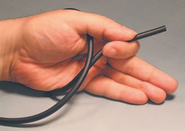

3.1 Guitar plug male connectors
137
Now that we ’ re straight on the tabs, let ’s see the whole plug ( Figure 3.1.3 ).
Here we can see the business end(s) of our plug(s) – mono on the bottom and stereo on the top. Notice the ring on the stereo plug? That ’s the part the low conductor is connected to – and clearly omitted in the mono plug below it. So one tab no ring, mono plug. Two tabs has ring, stereo plug.
All should now be clear as the fi nest crystal, and we can proceed to the actual sequence of wiring the thing.
Figure 3.1.3 Mono/stereo comparison – 2.
Wrap the wire fi rmly around your hand ( Figure 3.1.4 ). This prevents the individual conductors from being pulled out when they are stripped and is only needed on short lengths of wire. If the wire is already harnessed or strain-reliefed, you don ’t have to wrap it around your hand.
Figure 3.1.4 Wrap wire around hand.
Figure 3.1.5 Measure against plug.
Since different makes of plugs will have different lengths of the strain relief arm, you should measure the amount of outer jacket to be cut away against the plug itself ( Figure 3.1.5 ). With this particular plug, we get a length to cut back of 1.25 inch. We ’ re stripping back a little more than we need to, so we can have some slack to play with.

138
Audio Wiring Guide
Note that by placing my thumbnail at the point being measured, I can guide my stripping tool safely to the exact spot I want. This makes it easier to strip back an accurate distance each time.
The wire I ’ m using for this example is two-conductor shielded Monster, one of the highest quality types available. Like many larger diameter wire types, it has a thick, rubbery outer jacket, which cuts more cleanly with a razor blade than with a pair of wire strippers. However, should you prefer, stripping the outer jacket off with wire strippers is also fi ne.
If using a blade, gently rock it at a right angle to the wire and then, using a light slicing motion, spin the blade around the wire, keeping it at a right angle at all times ( Figure 3.1.6 ). This technique will create a super-clean cut of the outer jacket and, if done gently, will not harm the strands of the shield conductor that lie just inside the outer jacket.
Figure 3.1.6 Cut outer jacket with razor blade.
Gently bend the cut in all directions to break away any slivers of the outer jacket that still connect both sides ( Figure 3.1.7 ). If needed, cut the slivers lightly with the razor blade. The break should be complete on all sides.
Figure 3.1.7 Break open razor cut.

3.1 Guitar plug male connectors
139
Lay the wire fl at and cut from the circular break to the end of the wire, along the length of the wire ( Figure 3.1.8 ). Do this delicately – this is not the time for force. Try to feel the wire as you cut, and let its resistance guide the strength of your slice.
Figure 3.1.8 Cut along length of wire.
After you ’ ve fi nished the cut, peel away the outer jacket with your fi ngers.
You shouldn ’t need any other tools.
Figure 3.1.9 shows the nature of the Monster wire we ’ re using: it ’s a tinned and tightly braided shield – very effective and physically strong, but stiff, and a real pain in the fundament to work with. It also shows that we did the cut correctly; there are no broken strands in the shield conductor.
Figure 3.1.9 Outer jacket removed.
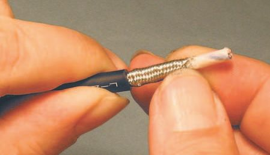

140
Audio Wiring Guide
Push back the shield conductor strands away from the exposed end ( Figure 3.1.10 ). This loosens the weave of the strands and makes them easier to unbraid.
Figure 3.1.10 Push shield conductor strands back.
Figure 3.1.11 Unbraiding shield – 1.
Using any convenient small pointy object, carefully unbraid the shield strands ( Figure 3.1.11 ). Do this one or two overlaps at a time; don ’t try to do a whole bunch at once – you ’ ll break strands. As you can see here, the awl blade on a Swiss Army knife is ideal for this operation.
Keep going, keep going – it won ’t take long. Work all the braiding out of the shield strands, right down to where they break out from the outer jacket ( Figure 3.1.12 ). This will help us a bit later, when we separate the wheat from the chaff, er, the shield strands from the leftover insulation underneath them.
Figure 3.1.12 Unbraiding shield – 2.
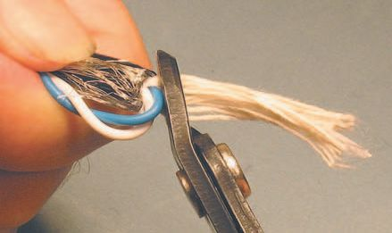
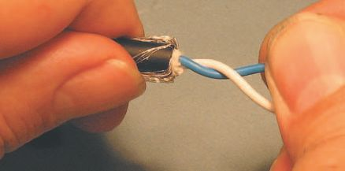
3.1 Guitar plug male connectors
141
The shield strands are separated as in
Figure 3.1.13 . The alliteration is not
deliberate – it ’s just what we ’ re doing
here. Gather all the shield strands
off to one side and the fuzzy, frizzy
insulation off in any other direction,
as long as it ’s away from the shield,
because we ’ re about to do something
calculatedly violent next.
I ’ ve carefully gathered the shield, and
both the high and low conductors,
off to one side. I ’ ve also gathered
the insulation off the other way and
Figure 3.1.13 Separating shield strands.
positioned it in the jaws of my
dykes ( Figure 3.1.14 ).
All is ready for the big cut! But
before I do that, I ’ ll take one
fi nal look to make sure all the
conductors are out of harm ’s
way. It ’s not hard to cut (or nick)
one, and then you ’ d have all that
unbraiding to do again. Very
boring.
So look twice – heck, look three
times. Cut once and cut right. You
Figure 3.1.14 Cutting away insulation.
can always do a little clean-up
work with the dykes after the main
clump of insulation is gone.
Monster does their best to make
quiet wire. So not only is the
shield braided, the high and low
conductors are twisted together,
to reduce noise. Untangle
them so you can deal with each
conductor individually ( Figure
3.1.15 ). Note the close-cropped
Figure 3.1.15 Untwisting conductors.
collar of insulation? That ’s about
as close as you can get it with this type of wire.


142
Audio Wiring Guide
As you can see in Figure 3.1.16 , we ’ ve done the preliminary work properly.
The (unbroken) shield strands are bunched to one side, the insulation is trimmed back neatly, and the low and high conductors are untangled, ready to be cut back.
Hold the wire in your hand (or a vise) and smooth out the strands of shield so they lie fl at ( Figure 3.1.17 ). The goal is to make a thin, broad surface, to solder onto the strain relief. Think of a strip of paper lying limply – not a twisted rope, as one might be tempted to make.
Figure 3.1.17 Smoothing out shield.
Figure 3.1.16 Measuring against connector.
Now that you ’ ve got those shield strands lying obediently fl at, you need a trick to keep them that way. At the end of the shield strands, twist them around each other in a circular motion ( Figure 3.1.18 ). This will leave the bulk of the strands lying fl at, and fl exible, but keep the whole bundle of strands together for soldering.
Figure 3.1.18 Twist shield at end.
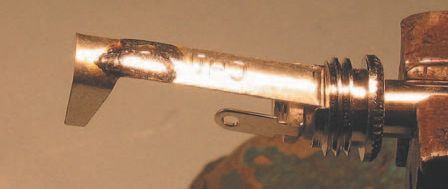


3.1 Guitar plug male connectors
143
Here, I only put a single twist in the shield conductors –
just enough to hold them together ( Figure 3.1.19 ). The
arrow points to the twisted part. If you prefer, you can
keep going and twist them out to the end (toward the
right in the fi gure), as this part will be cut off later.
Solder the shield conductors at the twisted point ( Figure
3.1.20 ). Use only enough solder to keep the strands
together at the twist. Don ’t let the solder run into the fl at
portion you created – that would make the shield stiff,
when we need it to be fl exible.
Put the wire aside for a bit and mount the connector in a
vise, with the strain relief facing up. Tin a broad area on
the arm of the strain relief, where the shield strands are
Figure 3.1.19 Twist in shield.
likely to wrap over it ( Figure 3.1.21 ). Tin it lightly – just
enough to make a thin fi lm on the surface for more solder to bond with.
A tasteful patina is required, not slobbery globs.
See the shiny surface and slight mounding in Figure 3.1.22 ? This is a correctly tinned strain relief, ready for its fi nal assembly. Be happy for it.
Figure 3.1.20 Solder twist in shield.
Figure 3.1.21 Tinning strain relief.
Figure 3.1.22 Correct tinning.

144
Audio Wiring Guide
The next cuts are critical in length, so lay the wire against the connector to get a reality check on the needed length(s) ( Figure 3.1.23 ). It ’s common that the optimum length for the high and low conductors is
slightly different.
Figure 3.1.23 Sizing for cut-off.
If you ’ re wondering what that mystical ‘ optimum length ’ is, here are some guidelines:
● The shield conductor must be positioned so it can be wrapped over the strain relief arm, past the ‘ U ’ -shaped yoke at the end, but not so close as to short out the high and low tabs.
● The high and low conductors must go in a slight arc (curve) to
their respective tabs and be cut long, to allow enough stripped
length for insertion in the holes in the center
of each solder tab. The reason to have a
slight arc is to make the conductor able to
fl ex under stress – not snap off at the solder
point.
In this case, the high conductor is {19/32}
inch and the low conductor is {9/16} inch, but
since connectors vary in length, so may your
mileage.
See how it all lines up in Figure 3.1.24 ? The
shield is past the yoke and I ’ m cutting the
conductor I chose as high, to go slightly past
Figure 3.1.24 Cutting high conductor.
the hole in the high solder tab.

3.1 Guitar plug male connectors
145
In this case, both the white and blue con ductors are electrically identical. So you can choose either one for the low or high, but you must be consistent!
If blue is high at one end of your cable, make darn sure it ’s high at the other end too. That was {19/32} inch, right?
The tabs on this connector are so close to the same length, I only need to make the low conductor {1/32} inch longer, for a total length of {19/32}
inch when cut to fi t ( Figure 3.1.25 ). Could I get away with making both the low and high conductors the same length? Sure I could – but I want the insulation to go fl ush to the tab(s), so the extra length helps.
Figure 3.1.25 Cutting low conductor.
Strip both the high and low conductors back {1/16} inch ( Figure 3.1.26 ). Why such a small amount? Because the insulation on Monster cable tends to
shrink (or ‘ wick ’ ) back when the strands are heated to be tinned. You ’ ll see this in the next steps.
Figure 3.1.26 Stripping both conductors.

146
Audio Wiring Guide
Tin both the high and low conductors ( Figure 3.1.27 ). Do this fairly quickly or the insulation will wick (melt) back too far.
Figure 3.1.27 Tinning the conductors.
Since our next step is to solder the connector, we must put the outer metal shell and inner plastic insulator onto the wire right now! If this step is forgotten, you get to un solder the tabs and try again.
You can see both those items in Figure 3.1.28 . You lost the inner insulator?
Improvise – use a bit of electrical tape after the soldering is complete. Gaffer tape, Scotch tape, even paper – you must provide some form of insulation between the tabs and the outer metal shell, or it ’ ll be shorting time.
Figure 3.1.28 Putting on shell and insulator.
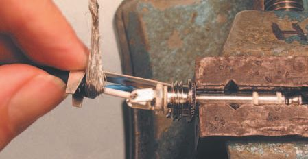
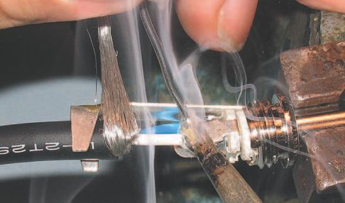
3.1 Guitar plug male connectors
147
Position the wire so the shield
is past the yoke and the
strands of the low conductor
are through the hole in the low
solder tab ( Figure 3.1.29 ). Try
to get the insulation on the
conductor to butt fl ush up to
the tab, as it does here.
Carefully crush (how ’s that for
an oxymoron – but it ’s true)
Figure 3.1.29 Inserting strands in tab.
the strands down onto
the solder tab to lie as
fl at as possible ( Figure
3.1.30 ). This reduces the
chance of shorting.
Soldering the low tab
is the hard one ( Figure
3.1.31 ). Once this solder
point is done the wire will
be locked into position.
But right now, everything
is still wiggly, so try and
keep the strands aligned
in the tab, and the shield
draped over the strain
Figure 3.1.30 Crush strands to tab.
relief.
Solder quickly, running
in enough solder to fi ll
the hole in the tab, and
create a slight mounding
(rounding) where the
strands enter the tab
hole.
And the white stuff in the
fi gure isn ’t ectoplasm,
it’s a nice puff of rosin
smoke. Dramatic, don ’t
you think?
Figure 3.1.31 Solder low tab.


148
Audio Wiring Guide
Figure 3.1.32 Completed low tab.
Figure 3.1.32 is a shot without the smoke, so you can see things clearly.
Note the shiny solder, the mounding, and the insulation fl ush to the tab.
Try to make each solder point perfect; nothing is more important than the point you are working on right now – until the next one.
For the high tab, it helps to fl ip the connector around fi rst, so the high tab is facing up. Then slip the strands of the high conductor into the hole of the high solder tab ( Figure 3.1.33 ).
Next we have another crush job ( Figure 3.1.34 ). Make the high strands lie fl at against the high tab and chomp down with your pliers.
Figure 3.1.33 Insert high strands.
Figure 3.1.34 Crush high strands.
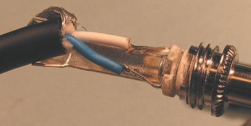
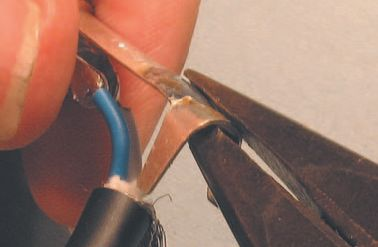
3.1 Guitar plug male connectors
149
Figure 3.1.35 Solder high tab.
Solder the high tab with the same loving care as you did the low tab
( Figure 3.1.35 ). Solder quickly, running in enough solder to fi ll the hole in the tab, and create a slight mounding (rounding) where the strands enter the tab hole.
Figure 3.1.36 shows the construction details. See how fl at the solder points are? See how the insulation comes fl ush to the solder tabs? Nice – on to the shield!
Flare the arms of the yoke with your pliers ( Figure 3.1.37 ). This will reduce the chance that contact with the yoke will melt the outer insulation jacket when the shield strands are soldered.
Figure 3.1.36 High and low complete.
Figure 3.1.37 Spreading arms of yoke.
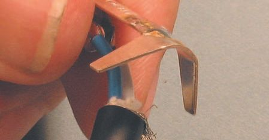
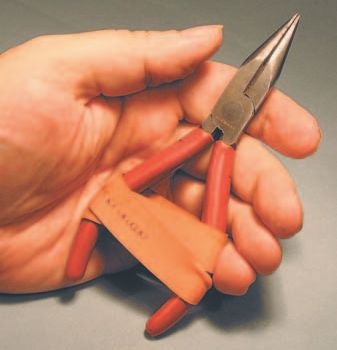
150
Audio Wiring Guide
Figure 3.1.38 Properly fl ared yoke.
Spread the arms of that yoke nice
and wide ( Figure 3.1.38 ). You ’ ll crush
them down anyway, in the fi nal
Figure 3.1.39
assembly.
Create weight for shield.
We need to make a weight to hang off the shield strands, one that will keep them in position for soldering. Figure 3.1.39 shows a pair of pliers with a rubber band for some clamping action – easy to improvise.
You can use anything that has suffi cient weight to pull down on the shield strands – hemostatic forceps, pliers or an old fi shing sinker. Be creative – the point where the weight is attached will be cut off the shield strands after soldering anyway.
Rotate the connector in the vise so the strain relief is facing upward. Hold the wire up against the fl ared yoke and tightly wrap the shield strands over the arm of the strain relief ( Figure 3.1.40 ).
Figure 3.1.40 Wrap shield around strain relief.
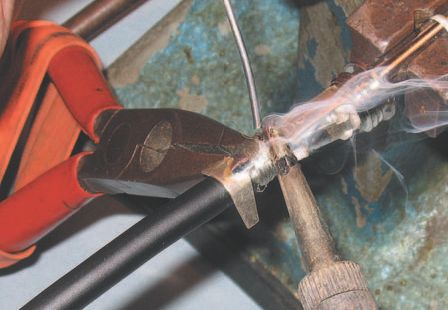

3.1 Guitar plug male connectors
151
Figure 3.1.41 Correctly positioned weight.
Our weight here is the pair of pliers hanging off the shield strands ( Figure 3.1.41 ). See how tightly the strands are wrapped across the strain relief arm?
Also note that the wire has fallen away from the yoke – which is a good thing. That way the yoke won ’t melt the outer jacket when we solder. All is in position for the last solder point to be done.
Press fi rmly down with the tip of the iron, for maximum heat transfer. Be liberal with the amount of solder you run in; here we want to fi ll all the voids in the shield strands, so they and the arm of the strain relief become one piece of metal ( Figure 3.1.42 ). Just don ’t use so much solder as to cause blobs to appear on the shield strands.
The correct soldering of the shiny, silvery, shield strands is illustrated in Figure 3.1.43 . OK, that alliteration is deliberate – but also totally accurate.
Figure 3.1.42 Soldering shield strands.
Figure 3.1.43 Correctly soldered shield.

152
Audio Wiring Guide
Use dykes to cut away the excess shield strands ( Figure 3.1.44 ). Cut as close as possible to the arm of the strain relief. Also cut at an angle, so the cut edge is beveled (angled) in relation to the strain relief arm. It gives you less to fi le smooth in the next step.
Figure 3.1.44 Cutting excess shield strands.
File the edge you just cut, with any size fi le that will fi t. In Figure 3.1.45 , I ’ m using about the biggest fi le that will fi t the work. It was handy and will make short shrift of any rough edges.
Figure 3.1.45 Filing cut edge.

3.1 Guitar plug male connectors
153
Figure 3.1.46 shows the correctly fi led edge. Now is also a good time to cut away any stray strands that may have escaped your clutches, clean up any extra insulation, and generally tidy things up.
Figure 3.1.46 Correctly fi led edge.
Here, our goal is to crimp and curl the strain relief yoke tightly around the curve of the wire. So bend it a little at a time, and work it so as to press it into the outer jacket evenly at all points. We want an arc that matches the wire, so do one side at a time. Figure 3.1.47 shows the fi rst part of the crimp.
Figure 3.1.47 Crimping yoke – 1.

154
Audio Wiring Guide
The second half of the operation is illustrated in Figure 3.1.48 . We can see the curled yoke arm we just formed. Now we want to curl the other yoke arm over the fi rst one, making a very strong, secure strain relief.
Figure 3.1.48 Crimping yoke – 2.
If done right, this combination of the support from the yoke arms, combined with the shield being soldered down, will make the strain relief as strong as the wire itself. Pretty cool, huh?
All the hard work is done, we just have to screw the outer shell in place and squirt the connector with our special goose grease – er, ProGold contact enhancer, that is. But I thought you might like to see the fi nal product ( Figure 3.1.49 ) before the outer shell hides all the details.
Figure 3.1.49 (Almost) complete connector.

3.1 Guitar plug male connectors
155
Screw the outer metal shell fi rmly into place ( Figure 3.1.50 ). And now, for the very last step.
Figure 3.1.51 shows the tip, ring and sleeve being sprayed with enhancer.
I ’ m using Caig ProGold G5 and recommend that you do too! It prevents aerobic corrosion – which degrades conductivity. It improves electrical contact on all metals used in electrical connections, and is especially good for low-power connections like guitar outputs and mating stage boxes. Most guitars have very low power output, down in the microvolt range.
Figure 3.1.50 Screwing down outer shell.
Figure 3.1.51 Spraying with ProGold.
At such a low level, any slight reduction in conductivity can be much more harmful then it would be at line level or speaker level. At higher power levels, the signal can cut through layers of (semi-conductive) corrosion.
Audio Wiring Guide
Note: Caig Labs has recently changed the name from ProGold to DeoxIT Gold.
It’s the same stuff. They also have some new products that are interesting.
More info about ProGold is on the Caig Labs website ( www.caig.com).
That ’s it, folks. ‘ That ’s all she wrote ’ – or maybe I should say ‘ wired ’ . Now it’s time to whip out that VOM you bought after I suggested you do so in Section 1. If you really read the whole book, you ’ ll recall a mini-course in how to use it (the VOM) that was part of Section 2. You ’ ll even remember what VOM, or DVOM, stands for.
Test your work, check it for shorts and high-resistance solder points. If it all checks out, enjoy your new connections!
3.2
connectors
For those of you reading through the connector modules sequentially,
a good part of the information on the male guitar plug is duplicated
here. This is neither accidental nor laziness on my part. Rather, they are connectors in the same family, and each module is written as a ‘ stand-alone ’ , to reduce fl ipping back and forth for instructions. So now for a little recycling, followed quickly by some new pictures.
The so-called ‘ guitar ’ plug is one of the oldest connectors still in use. With minor changes in form, you can see this type in use on your grandmother ’s pre-1900 telephone switchboard, and up to the present time.
Its large size makes it sturdy, if bulky, and it ’s a relatively easy connector to wire. The large surface area helps give good electrical contact, even when the plug ’s metal is slightly corroded. Small chunks of dirt and crud will often get knocked out of the way when the male plug is inserted in the female, so it’s pretty roadworthy.
Standard guitar plugs are {1/4} inch in diameter. There ’s a miniature version, with a {1/8} inch diameter plug that ’s also much shorter in length. We show the sequence for that type in Section 3.3.
But both the standard and mini versions of the plug come in both stereo (two-conductor and shield) and mono (one-conductor and shield) versions. So I ’ m going to show you the wiring sequence for a stereo female guitar plug here.
My assumption is that it ’s easier for you to forget something than it is for you to remember it, right? So if you have a stereo female plug, just follow the sequence. If you have a mono plug, just omit the steps shown for the low conductor, as you will not have low, only high and shield connections.
In other words, the stereo has high/low/shield, but the mono version is only high/shield.
To reinforce the above concepts, I ’ ve got a few quick pictures to show you, starting with the female plug in Figure 3.2.1 , and then we can get on to the actual wiring of the plug.
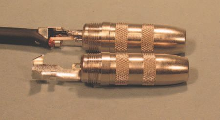
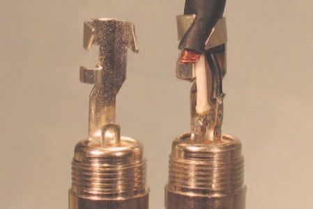
158
Audio Wiring Guide
Figure 3.2.1 Female plug.
How can you tell if I ’ m holding a mono or a stereo female guitar plug? Well, one way is to plug a male into it. If you get one click, it ’s mono, get two clicks and it ’s stereo – unless the contacts are mushy and fool you. But the easier way is to take the outer shell off and look at the solder tabs inside.
Let’s do that now in this next series of fi gures.
Figure 3.2.2 is an overall shot of a mono plug (at the front) and a stereo plug (at the back). See the difference in construction? The mono plug has only one solder tab, the stereo plug has two. This is shown in greater detail in Figure 3.2.3 . This ultra-close-up clearly shows the one vs. two solder tab construction on the mono (left) and the stereo (right) versions of our beloved female guitar plug. Without her, there would be no headphone
extensions – tragic.
Figure 3.2.2 Stereo/mono plugs – 1.
Figure 3.2.3 Stereo/mono plugs – 2.